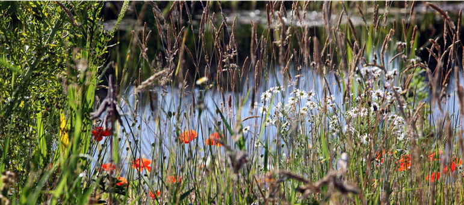

The nutrient level in an organic pool is carefully restricted so competition for the limiting nutrient (usually phosphorous) is fierce. In these circumstances, pond plants outperform algae, keeping it supressed and barely hanging in at the margins. A pond, low in nutrients, is a healthy environment for wildlife. An organic pool is teeming with life. If an alien micro-organism, a human pathogen for instance, enters the water, it faces battalions of hungry pond dewelling micro-organisms to either starve it out of existence, or devour it. A water analysis of this pond water showed that it contained zero organisms of e coli. per litre of water.
by
originally published on www.organicpools.co.uk